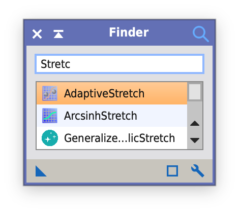

Finder
PixInsight update repository for the Finder module.
A compact search window for all installed processes and PJSR scripts. Matches are filtered by name while typing and shown with their process or script icon; Return or a double click launches the selected process or runs the script.
Optionally Finder opens when PixInsight starts, closes after launching a process, or shrinks to a narrow search line while it does not have the focus. The options are set with the wrench button in the control bar.
This page is informational. For PixInsight, use the repository URL shown below.
Repository URL for PixInsight
https://tricx.de/pi-scripts/Finder/
Installation in PixInsight
- Resources > Updates > Manage Repositories
- Add repository:
https://tricx.de/pi-scripts/Finder/ - Run Check for Updates and restart PixInsight
- Run via Process > Tricx > Finder
Requires PixInsight 1.9.5 or later on macOS (Apple Silicon and Intel), Linux x64 or Windows x64.
Screenshot

License
Released under the GNU General Public License v3; source code on GitHub.
This product is based on software from the PixInsight project, developed by Pleiades Astrophoto and its contributors (https://pixinsight.com/).